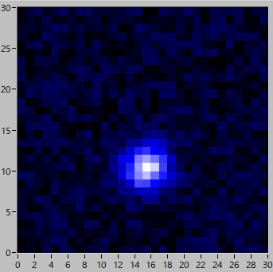
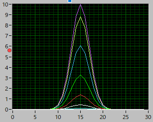
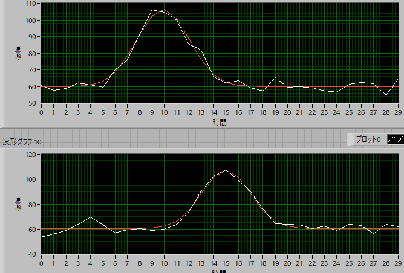

2次元ガウシアン画像のフィッティング方法-02
加算による2次元ガウシアン画像
これは，現在石島研で使用されているアルゴリズムで，東北大学時代に当時助教だった井上さんが作られたものです．

このような画像の場合，ｘ，もしくはｙ方向に加算していく手法です．
| 1 | 2 | 3 |
| 4 | 5 | 6 |
| 7 | 8 | 9 |
のように，番号をつけた3×3の画像があるとします（単なる番号であって強度ではありません）．
X方向の場合は，これを，
| 1 | 2 | 3 |
+
| 4 | 5 | 6 |
+
| 7 | 8 | 9 |
としていくわけです．

各行はこんな感じとなります（見やすくするため，ノイズは0としてあります）．
これを加算して1次元のガウスフィットをするわけです．
Y方向の場合は，
| 1 | 2 | 3 | ||
| 4 | + | 5 | + | 6 |
| 7 | 8 | 9 |
のように列ごとに加算していくわけです．
こうすれば，おのおの一次元データとなりますので，一次元ガウスフィットを行えば，6つのパラメータが求まります．

ちなみに，解析結果は，
| 係数 | 初期設定 | フィッティング |
| A0 | 10 | 46.63 |
| y0 | 10 | 9.90 |
| dy | 2 | 2.13 |
| x0 | 15 | 15.00 |
| dx | 2 | 1.95 |
| Base | 2 | 59.82 |
| Noize | 1 |
となります．よくフィットできていることが分かります．
しかし，ピーク値，ベース値が初期設定と異なる値となっていることが分かります．
それは，各ピクセルを加算しているからですね，ではどのようにピーク値を推定したらよいでしょう？
次のページに示します．